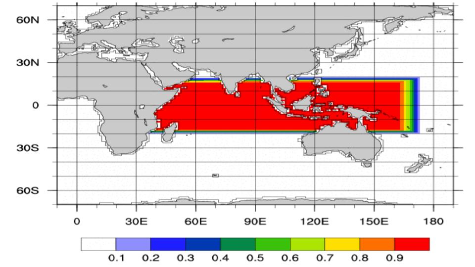

Climate Variability & Change
Working Group CVCWG
CESM1 Indian Ocean Pacemaker Ensemble
A 10-member ensemble of CESM1 (1 degree spatial resolution) simulations in which time-evolving SST anomalies in the tropical Indian Ocean (15oS-15oN, the African coast to 180W, with a linearly tapering buffer zone that extends to 20S and 20N, are nudged to observations (NOAA Extended Reconstruction Sea Surface Temperature version 3: ERSSTv3b) during 1920-2013 (extended through September 2017). In this way, the observed evolution of tropical Indian Ocean and western Pacific SST is maintained in each simulation, with the rest of the model's coupled climate system free to evolve. Note that only the SST anomalies, not the total SST, are nudged to observations, maintaining the model's mean state, including any model biases. All external forcings are identical to the LENS, aside from stratospheric ozone. Further details are provided in the two papers below: provided in the papers below:
- Yang D., J.M. Arblaster, G.A. Meehl, M.H. England, E.-P. Lim, S. Bates, N. Rosenbloom, 2020, Role of tropical variability in driving decadal shifts in the Southern Hemisphere summertime eddy-driven jet, J Climate, https://doi.org/10.1175/JCLI-D-19-0604.1
- Zhang, L., W. Han, K. B. Karnauskas, G. A. Meehl, A. Hu, N. Rosenbloom, and T. Shinoda, 2019: Indian Ocean Warming Trend Reduces Pacific Warming Response to Anthropogenic Greenhouse Gases: An Interbasin Thermostat Mechanism. Geophys. Res. Lett., 46 10882-90
We kindly ask that you reference one of these papers and acknowledge the CVCWG when presenting results based on the CESM1 Pacemaker Ensemble in either oral and written form.
Project Details
- Restoring Mask
 - Simulation Names:
- b.e11.B20TRLENS.f09_g16.SST.rstor.IOD.ensXX / b.e11.BRCP85LENS.f09_g16.SST.rstor.IOD.ensXX, XX = 01-10
- b.e11.B20TRLENS.f09_g16.SST.rstor.IOD.ensXX / b.e11.BRCP85LENS.f09_g16.SST.rstor.IOD.ensXX, XX = 01-10
- Model Version: CESM1.1 Codebase | Documentation
- Resolution: 0.9x1.25_gx1v6 (CESM nominal 1o grid)
- Years: 1910-2013 (extended through September 2017)
- Ensemble Size: 10 members
- Time Frequencies Saved: Monthly, Daily
- Machine: NCAR:Cheyenne and NCAR:Yellowstone
- Compsets: B20TRLENS / BRCP85LENS
Additional Notes: SST anomalies (15oS-15oN, African Coast to 174oE.) nudged to ERSSTv3b observations. (Errata: In Yang et al., the Eastern border of the mask was mistakenly described as extending from the African Coast to 180oW). All CMIP5 time-varying external, natural and anthropogenic forcings were specified in this ensemble.
Data Acquisition
The CESM1 Indian Ocean Pacemaker 10-member ensemble is available from the Climate Data Gateway (https://www.earthsystemgrid.org/dataset/ucar.cgd.ccsm4.IOD-PACEMAKER.html). Contact the CVCWG liaisons with questions. .